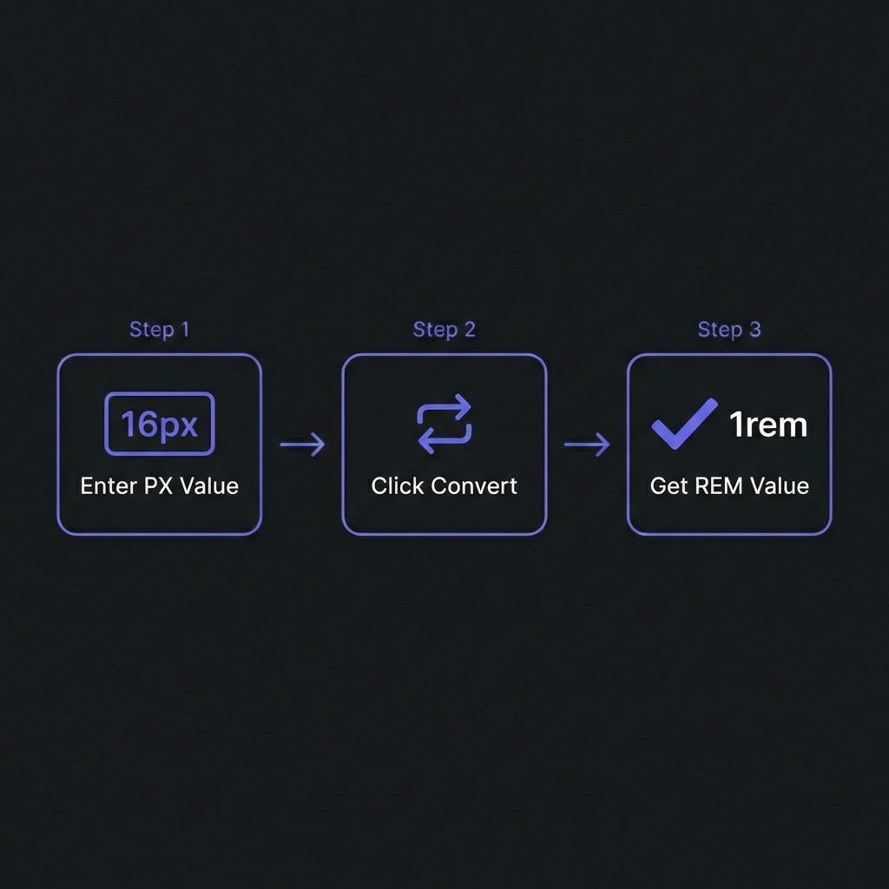

In current modern web development, hard-coding font sizes in Pixels (px) is
considered an anti-pattern. While pixels offer pixel-perfect precision on your monitor, they fail to
respect the user's browser settings.
REM (Root EM) units are the standard for accessible, responsive typography. They scale
automatically based on the user's preferences. If a visually impaired user sets their browser default
font size to 24px, a REM-based site adapts perfectly. A PX-based site remains tiny and unreadable. This
guide explains how to make the switch.

How to Convert PX to REM - Simple 3-step workflow
Why Pixels Break Accessibility
The default font size of every major web browser is 16px. However, users can change this
in their browser settings (e.g., Settings > Appearance > Font Size).
Using PX:font-size: 16px forces the text to be 16 physical pixels
high, regardless of the user's preference. This effectively ignores the user's request for larger
text.
Using REM:font-size: 1rem means "100% of the root font size." If the
user sets their base to 24px, your text becomes 24px automatically.
The Golden Rule
Always use REM for font-size, margin, and padding. Use PX
only for borders (1px solid) or purely visual elements that should never scale
(like rigid icons in a fixed toolbar).
The Math: 16px Base Calculation
Since the browser default is 16px, the conversion formula is simple:
Doing this math in your head (Quick! What is 18px in rem?) is tedious. That's why developers use
converters or the "62.5% hack."
The 62.5% HTML Hack
This technique simplifies the math by changing the base font size to 10px.
CSS Trick
html {
/* Default is 16px. 62.5% of 16px = 10px */font-size: 62.5%;
}
body {
/* Reset back to readable size */font-size: 1.6rem; /* 16px */
}
h1 {
font-size: 3.2rem; /* Easily creates 32px */
}
p {
font-size: 1.4rem; /* Easily creates 14px */
}
Pros: Math is easy (divide by 10). Cons: If you use third-party
libraries that assume 16px root, their styles might break/shrink. Modern frameworks like Tailwind handle
this utility generation for you efficiently without this hack.
Convert Units Instantly
Stop doing mental math. Convert between PX and REM relative to any base size (16px, 10px, custom).
Copy CSS directly.
Both are relative units, but they relate to different things.
REM (Root EM): Relative to the <html> tag font size. Consistent
across the entire page.
EM: Relative to the parent element's font size. This cascades and
compounds.
The Compounding Problem of EM
div { font-size: 1.5em; }
<!-- 1.5 * 16 = 24px -->
<div>
Text
<!-- 1.5 * 24 = 36px (Whoops!) -->
<div>
Nested Text
</div>
</div>
Verdict: Use REM for font sizes to avoid nesting surprises. Use EM for padding/margin on
buttons if you want the spacing to scale with the button's text size.
Frequently Asked Questions
Does browser zoom work with Pixels?
+
Yes. Modern browser "Zoom" (Ctrl +) scales the entire page, including pixels.
However, this is different from "Text Size Only" settings common in accessibility tools. Pixels
fail in "Text Size" mode, whereas REMs succeed. Using REM supports BOTH zoom types.
Should I use REM for media queries?
+
Yes, definitely.@media (min-width: 40rem) (where 40rem = 640px)
ensures that if a user increases their base font size, the mobile layout triggers earlier. This
prevents the layout from breaking when text becomes huge on a narrow screen.
What about VH and VW units?
+
Viewport units (vh, vw) are distinct. They are relative to the window size, not
the font size. They are great for full-screen hero sections (height: 100vh) but bad
for text size because font-size: 5vw on a phone is illegibly small.
How does CSS calc() fit in?
+
calc() is powerful for mixing units. Example:
width: calc(100% - 2rem). It allows you to have a fluid width (percent) minus a
fixed accessible margin (rem).
Is using 16px bad for SEO?
+
Indirectly. Google measures "Accessibility" and "Mobile Friendliness." If your
text is too small (e.g., hard-coded 12px) and doesn't scale for mobile users, your Mobile
Usability score drops, hurting rankings. Using REMs ensures compliance with legibility
standards.
What about border-width?
+
Borders are usually the exception where PX is acceptable. A 1px border is a
clean line. A 0.0625rem border might calculate to 0.9px or 1.1px, causing anti-aliasing blur on
some screens. Stick to border: 1px solid....